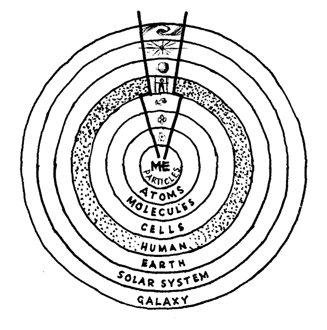
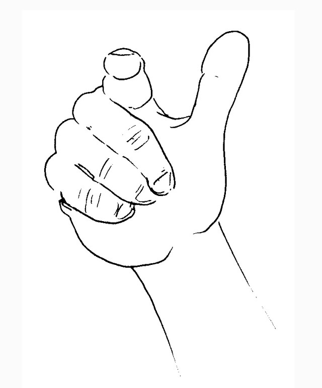

What any thing is depends partly on the range of the observer. Look at something nearby – a chair, for example. At this distance it has a particular shape and colour, but get closer to it (with the aid of a powerful microscope) and it changes. It becomes fibres. Closer still (using more powerful instruments), it becomes molecules, particles and so on, till there’s practically nothing left to observe. It is like an onion whose layers you peel as you approach. It remains recognisable as a chair only when you keep your distance.
You have layers too. At several metres you are a person. But if I move closer you become just a head, then a patch of skin. If I could move even closer (using various instruments) I would pass through your cellular, molecular and atomic layers, peeling away your appearances till there’s hardly anything left of you.
On the other hand, if I move away, your body becomes absorbed into the surrounding environment – your local town or city which in turn is absorbed by your country and continent. Zooming away still further, I pass through your planetary, solar and galactic layers. These layers are also you – you at great distances – though you may not usually think of them as your ‘self’. But though you may not identify with them, you depend on your distant layers as much as you depend on your near ones. Your sun, for example, is as vital to you as your heart.
What is at the centre of all your layers? What is the reality behind all your appearances? The nearer I approach, the less I find. At very close range you are almost nothing. However, no matter how close I get, I fail to peel away a final layer to see into your centre. I am unable to unmask you, unable to uncover the reality at your centre. The heart of you remains a mystery to me.
Fortunately there is someone who can see the mystery at your centre, the reality behind all your appearances. Who is that?
You!
You can see your central reality because you are there. You, and you alone, are perfectly placed to see what you are at centre.
How can you see what you are at centre? Do the pointing experiment!
